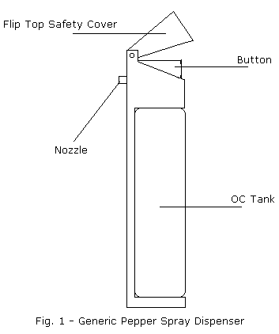
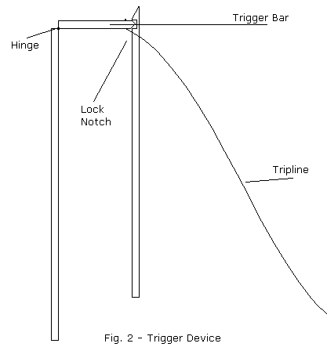
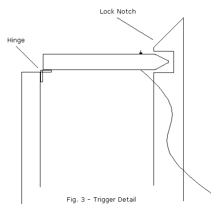
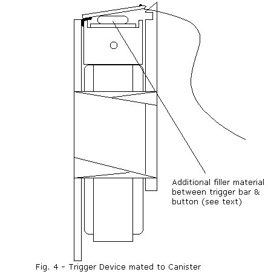
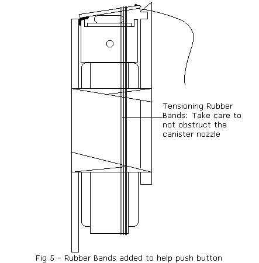
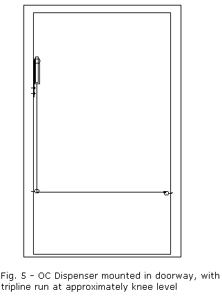
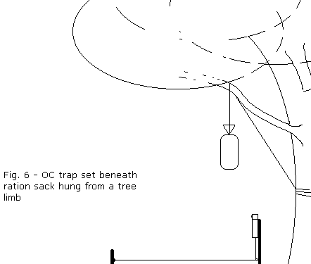

|
Ever feel like you needed just a few seconds (or several minutes) worth of distraction when uninvited guests arrive? Especially in the middle of the night, when you're sleeping, it can be hard to get the jump intruders. You may need a little time to get oriented. Or even have a cup of coffee while you consider the best way to dispose of your visitor(s). Booby traps involving firearms are pretty old hat; it's pretty damned easy to rig a tripline to the trigger of a gun clamped into position to cover a door or window (consider that to be the obligatory 'bang' in this article). But unmonitored, automatic, lethal defenses have their drawbacks. It'd be a real bitch to forget about that shotgun come the night you lose your housekeys and try to get in through your own window. Evolution in action, I suppose. And if you care, the statist's courts frown upon such gadgetry, too. So today we're going to go hiss instead of bang. Pepper spray. Good ol' oleoresin capsicum (OC). I've been a great believer in OC since seeing the stuff in action. And after having been hit with it myself (for the record, I did let the idiot live; extenuating circumstances). It isn't the 100% effective miracle stuff that some salesmen would have you believe, but it does have its uses. And a burglar/raider trap is one of them. Pepper spray comes in a variety of dispensers, but most are fired by either pressing a button on the top of the canister like a can of hairspray, or by pulling a conventional 'trigger'. I'll use the hairspray-type as an example, but you can... wait for it... Be creative, and adapt the instructions to pull a trigger. We'll start with a generic OC canister.
 Then we'll add this little gadget:
 Basically, this is two strips of wood, which will fasten to opposite sides of the canister. One piece of wood has a smaller piece of wood attached at the top with a hinge. This 'hinge' could be an actual store-bought hinge, or - this is DIY Tom speaking - you can improvise a hinge with duct tape. I _know_ you have duct tape. The small wooden piece should be just long enough to stretch across the diameter of the OC canister. The strip for the other side of the can needs to be tapered at the top, with a small notch cut at the base of the taper like so:
 Now attach the triggering device to the OC can. I suggest - what else? - duct tape, since this will have to withstand some stress. You may have to flip a safety cover up out of the way of the trigger bar, or even remove it as shown in the illustration. Also note that when set, but not yet triggered, the trigger bars rests atop the tapered end of the notched stick; it should only enter the notch when triggered/fired.
 Now you'll have to 'calibrate' your trap. The idea is that a tug on a tripline will pull the hinged trigger piece down into the notch in the wood opposite the hinge. In theory, this depresses the button - and holds it down - until the can is empty. In reality, you need to add exactly enough material between the bottom of the trigger and the button to press the button when the bar engages the notch. Otherwise, the trigger bar simply spans over the button. You can glue pieces of popsicle stick, a large nut, or anything else handy onto the button to fill the gap. Another bit calibration you may need to do involves the force needed to push the button; you may find that you just can't get the canister to fire with a tug on the tripline. If that's the case- rubber bands. Working with one band at a time, loop rubber bands around the base of the canister and up over the trigger bar. This 'pre-tensions' the button so that less force from the tripline is required. Add rubber bands until the canister is just before going off.

Once assembled, your trap is ready to be set. In a home, I suggest mounting the dispenser/trigger on the door/window frame to be defended. If your hinge-mount side of wood is sufficiently wide or long, you should find it easy enough the screw it down with woodscrews - another handy item to keep on hand; a good screw is always nice. Sorry; couldn't pass it up. Back to the topic at hand... Add a third piece of wood just for mounting if you must (or use conduit clamps, nylon tie wraps, whatever), but make sure the nozzle is aimed correctly. Attach one end of your tripline - good fishing line is great for this - to the trigger; either drill a tiny hole through the wood and thread the line through, knotting it in place, or tie a loop around the end of the trigger bar. In the latter case, small notches in the bar to keep the line from slipping are a good idea. Use screw eyes (those little screws with closed loops instead of heads) to run and anchor your tripline. Set the line high enough that an intruder is unlikely to step over it, an low enough that his hands won't encounter it prematurely, warning him.
 Tactical consideration: When tripped, this can is going to fire until empty. You can fill a good-size room this way, rendering it uninhabitable. I suggest that you not position the trap in your bedroom. A foyer is a much better location. For use outdoors, attach a fairly long stake to the canister - or use one as the hinge-side wood strip. Set the stake in the ground at an angle to spray upwards (towards the intruder's eyes). This can be useful against nonhuman visitors as well. Think about protecting your food cache from raccoons, or your tent from bears. This ought to give you enough time to get the sights of your real bear deterrent lined up.
 A couple of points about the above example: Aim the trap away from your food unless you really like spicy dishes. Don't aim it toward your tent. A pain-enraged bear is not fun; be ready with more permanent follow-up actions, preferably rifle, but a large bore handgun may suffice. You may also wish to dispense with the locking notch in this case; shooting off an entire can of OC because a 'coon sniffed your food cache seems less than cost effective. Without the locking notch bar, your can is 'semi-auto' instead of 'full auto'.
Notes on OC sprays: OC is an oil, and is held in suspension in an alcohol base in pepper spray dispensers. How much OC is in there varies. I've seen as little as 1% OC (might as well throw your pepper shaker at him) and as high as 20% (advertised as bear repellent). I mistrust the lower concentrations, and the 20% stuff gets pricey. I recommend 10%. The dispersal method also varies. Cheap units simply squirt a thin stream of OC. Good units eject a dense cloud in a wide spray. Guess which to look for.
Did you like this article?
|